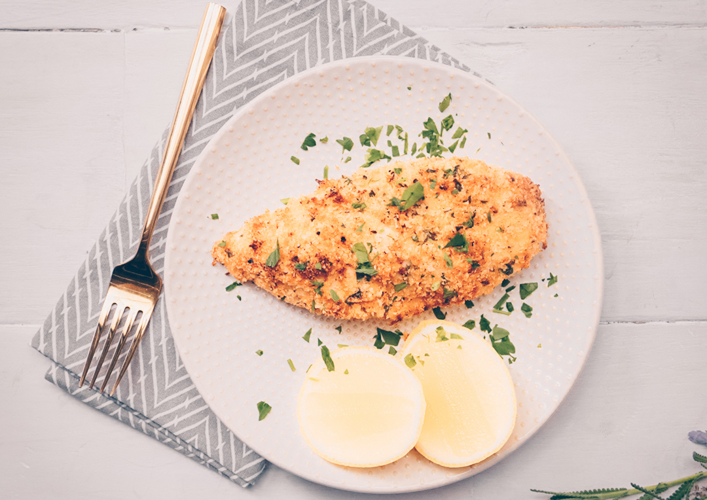

<div class="container mt-5">
    <div class="row">
        <div class="col-12 col-md-4 col-lg-3">
            <ul class="list-group list-group-flush">
                <h4 class="list-group-item list-transform">Trending Recipes</h4>
                </h1>
                <li class="list-group-item list-transform">Grilled Salmon with Lemon</li>
                <li class="list-group-item list-transform">Japanese Beef Ramen
                    <span class="badge badge-info">Trending!</span>
                </li>
                <li class="list-group-item list-transform">Creole Shrimp and Creamed Corn</li>
                <li class="list-group-item list-transform">Grilled Chicken with Patatoes</li>
                <li class="list-group-item list-transform">Cheesy Croissant Casserole
                    <span class="badge badge-success">New!</span>
                </li>
                <li class="list-group-item list-transform">Caprese Stuffed Chicken</li>
                <li class="list-group-item list-transform">Seriously Addictive Bacon Recipes</li>
                <li class="list-group-item list-transform">Spinach and Artichoke Quiche</li>
                <li class="list-group-item list-transform">Alphabet Pizza
                    <span class="badge badge-danger">Hot!</span>
                </li>
                <li class="list-group-item list-transform">Rosemary Pork Chops</li>
                <li class="list-group-item list-transform">The 85 Most Delish Taco Recipes</li>
            </ul><!-- end list -->
        </div><!-- end col -->

        <div class="card ml-4 col-12 col-md-8 col-lg-9">
            <div class="card-body">
                <h5 class="card-title">Daily Creative Recipe</h5>
                <p class="card-text">KITTENCAL'S MOIST CHEDDAR-GARLIC OVEN FRIED CHICKEN BREAST</p>
                <p class="card-text">
                    <small class="text-muted">“This is for serious garlic lovers. The chicken bakes out so moist and tender! Grated cheese may be sprinkled
                        on top of the breast the last 5 minutes of cooking if desired but that is optional. For the coating
                        amount you might be able to get away with 5 or maybe 6 very small chicken breasts, but I would suggest
                        to increase the amount slightly --- to take this dish to yet another level, about 10 minutes before
                        the cooking time is finished, drizzle the top of the chicken with a little pasta sauce, then sprinkle
                        mozzarella cheese on top. Return to oven for about 10 minutes until the chicken is completely cooked
                        and sauce is hot and cheese has melted. For a lemon-garlic flavor add in 3 tablespoons lemon juice
                        to the melted butter/garlic mixture.”</small>
                </p>
            </div>
            
        </div><!-- end card -->
    </div><!-- end row -->


    
</div><!-- end container -->